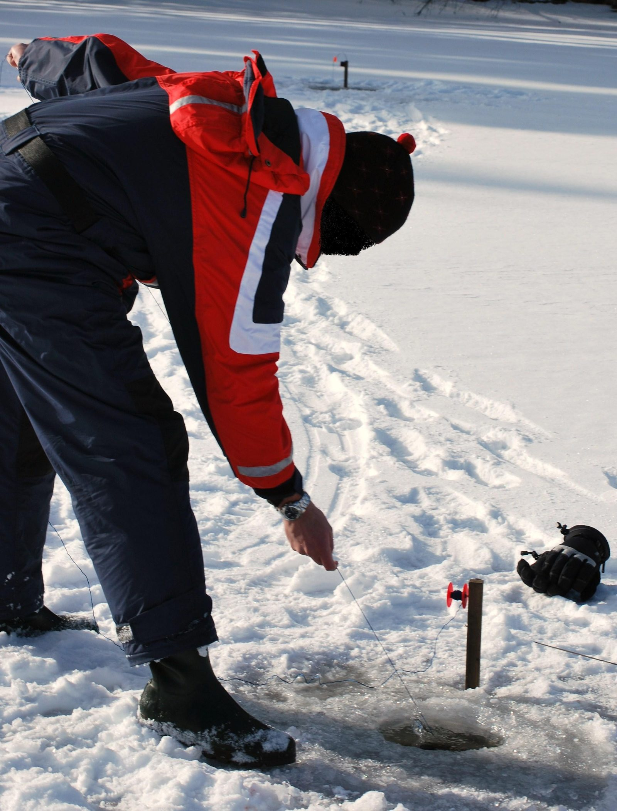

Bezpieczeństwo na lodzie — absolutny priorytet
Ocena pokrywy lodowej
Żadna ryba nie jest warta wejścia na niepewny lód. Za orientacyjne minimum dla pojedynczego wędkarza przyjmuje się zwykle około 10 cm jednolitego, przezroczystego lodu — ale to tylko punkt odniesienia, nie gwarancja. Lód biały (śniegowy), porowaty lub powstały po odwilżach jest znacznie słabszy od czarnego lodu o tej samej grubości. Grubość sprawdzaj co kilkanaście metrów już od samego brzegu — przy pomocy świdra lub pieszni — i pamiętaj, że pokrywa nigdy nie jest jednorodna: nad tym samym jeziorem mogą sąsiadować odcinki 15 cm i 3 cm. Po dłuższych odwilżach, na początku i pod koniec zimy zachowaj szczególną ostrożność lub po prostu zrezygnuj.
Kolce ratunkowe, linka i łowienie w towarzystwie
Kolce ratunkowe (dwa uchwyty z ostrzami, noszone na sznurku na szyi, na wierzchu odzieży) to absolutna podstawa — bez nich wyjście z przerębla o śliskich krawędziach jest dramatycznie trudne. Drugi element to rzutka lub linka ratunkowa 15–20 m w łatwo dostępnej kieszeni. Trzeci — zasada nielenienia się: na lód wychodź w towarzystwie i zachowuj między sobą kilkanaście metrów odstępu, zwłaszcza w marszu. Warto mieć też gwizdek, naładowany telefon w wodoszczelnym etui blisko ciała oraz plecak założony na jedno ramię (łatwy do zrzucenia). Coraz popularniejsze kombinezony podlodowe z certyfikowaną pływalnością realnie zwiększają szanse w razie załamania lodu.
Miejsca, których należy unikać
Lód jest systematycznie słabszy: przy ujściach i wypływach rzek oraz wszelkich ciekach (ruch wody podmywa pokrywę od spodu), nad źródliskami i dopływami wód pociepłych, wokół trzcin, pomostów, pali i wszystkiego, co wystaje z lodu (materiał ciemny nagrzewa się i topi lód wokół), w przewężeniach jezior, nad uskokami dna oraz w miejscach pokrytych grubym śniegiem, który izoluje i ukrywa słabiznę. Omijaj również stare, zamarznięte przeręble i szczeliny. Nigdy nie wchodź na lód po zmroku na nieznanym akwenie i nie zbliżaj się do widocznych oparzelisk — miejsc, gdzie woda nie zamarza.
Co robić w razie załamania lodu
Jeśli lód się załamie: nie panikuj i nie próbuj wychodzić „na wprost" — wracaj w kierunku, z którego przyszedłeś, bo tam lód cię utrzymywał. Rozłóż ramiona szeroko na krawędzi, wbij kolce i wypełzaj na płasko, pracując nogami jak przy pływaniu; po wyjściu nie wstawaj, lecz odturlaj się lub odpełznij kilka metrów. Ratując inną osobę, nie podchodź do przerębla — podawaj linkę, szalik, wędkę lub świder, leżąc na lodzie. Po wyjściu z wody kluczowa jest jak najszybsza zmiana odzieży i ogrzanie się; hipotermia rozwija się w minutach, więc wezwanie pomocy (numer alarmowy 112) nie jest przesadą.
Sprzęt podlodowy
Wędki podlodowe
Pod lodem używa się krótkich wędek 30–70 cm. Do mormyszkowania służą lekkie „bałałajki" i szkielety z miękką szczytówką lub kiwokiem, z niewielkim kołowrotkiem albo szpulką wbudowaną w rękojeść; liczy się masa (im lżejsza, tym lepsza praca nadgarstka) i ciepła rękojeść z EVA lub korka. Do błystkowania i balanserów bierze się sztywniejsze kije z wyraźniejszym blankiem, zdolne do pewnego zacięcia przez kilka metrów żyłki. Żyłki podlodowe są cienkie: 0,08–0,14 mm do mormyszki na okonia i płoć, 0,16–0,22 mm do błystek; plecionka na mrozie obmarza, więc standardem jest żyłka. Na szczupaka dochodzi przypon odporny na zęby.
Świder ręczny i akumulatorowy
Świder (lodowiert) to drugie po kolcach kluczowe narzędzie. Świdry ręczne o średnicy 100–130 mm są lekkie i zupełnie wystarczające do okonia i płoci; średnice 150–200 mm wybiera się z myślą o szczupaku i większych rybach, ale wiercenie nimi ręcznie w grubym lodzie to spory wysiłek. Coraz popularniejsze są napędy akumulatorowe — dedykowane świdry elektryczne albo adaptery pozwalające napędzać klasyczny świder wkrętarką o wysokim momencie. Noże świdra chroń osłoną (tępią się o piasek przy najmniejszym kontakcie z dnem czy brzegiem), a po sezonie osusz i zakonserwuj. Ostry świder wierci się sam; tępy zniechęca do szukania ryby, a to przekreśla całą taktykę.
Czerpak i drobny ekwipunek
Czerpak (łyżka cedzakowa) służy do usuwania lodowej kaszy z wywierconego otworu i utrzymywania go w drożności podczas mrozu — bez niego żyłka przymarza, a zacięcie grzęźnie w lodowej brei. Resztę ekwipunku stanowią: skrzynka lub szturmak do siedzenia z miejscem na sprzęt, pieszna do sprawdzania lodu na początku zimy, otwieracz/wypychacz do haczyków, pęseta (przydatna przy drobnych mormyszkach w rękawicach), pojemnik na przynęty noszony pod kurtką (ochotka nie może zamarznąć) oraz termos. Przyda się też mata lub kawałek pianki pod kolano przy odhaczaniu ryb na lodzie.
Przynęty i techniki
Mormyszki — typy i dobór
Mormyszka to drobna ciężka przynęta z wtopionym haczykiem, podstawa zimowego łowienia okonia, płoci i leszcza. Wolframowe są przy tej samej masie znacznie mniejsze od ołowianych — szybciej opadają i lepiej pracują głęboko, dlatego zdominowały współczesne pudełka. Kształty: klasyczna „kropla" i „kulka" uniwersalnie, „uralka" i „muńka" o przechylonej pracy, „kozy" i „czortiki" z kilkoma ostrzami do łowienia bez przynęty naturalnej (tzw. bezmotylkowe, gdzie zamiast ochotki na haczyku jest koralik lub kembrik). Rozmiar dobieraj do głębokości i aktywności ryb: im głębiej i im słabsze branie, tym mniejsza i cięższa (wolfram) mormyszka na cieńszej żyłce.
Kiwok i prowadzenie mormyszki
Kiwok — elastyczna szczytówka-sygnalizator z lavsanu, tworzywa lub sprężynki — nadaje mormyszce drgania i pokazuje branie, często jako delikatne „podniesienie" zamiast ugięcia. Kiwok dobiera się do masy mormyszki tak, by pod jej ciężarem uginał się umiarkowanie. Podstawowe prowadzenia: drobne, szybkie drgania z powolnym unoszeniem od dna na wysokość 30–80 cm, opad z przerwami, stukanie mormyszką w dno wzbudzające chmurę mułu oraz długie przytrzymania bez ruchu — zimą pauza bywa najważniejszym elementem. Rytm zmieniaj świadomie: ospała ryba często reaguje na spowolnienie i zmniejszenie amplitudy, nie na intensywniejszą grę.
Błystki podlodowe i balansery
Na aktywniejszego drapieżnika — przede wszystkim okonia, ale też szczupaka i sandacza — używa się pionowych błystek podlodowych i balanserów. Błystka pionowa to podłużny, wyważony kawałek metalu, który po podrzucie opada w bok szybującym ruchem; prowadzenie to cykl: podrzut 20–40 cm, swobodny opad na luźnej żyłce, kilkusekundowa pauza, w której najczęściej następuje branie. Balanser — poziomo wyważona przynęta w kształcie rybki ze sterem w ogonie — po podrzucie zatacza charakterystyczne ósemki, penetrując większy obszar pod otworem. Balansery 3–5 cm to klasyka okoniowa, 7–9 cm kierowane są na szczupaka i sandacza. Przy drapieżniku z zębami stosuj przypon, a przynęty uzbrajaj w ostre, sprawdzone kotwiczki.
Przynęty naturalne: ochotka i białe robaki
Królową zimowych przynęt jest ochotka — larwa ochotkowatych, zakładana na drobny haczyk mormyszki pojedynczo lub w pęczku. Przechowuj ją w chłodzie, ale nie na mrozie (pojemnik w wewnętrznej kieszeni), w wilgotnej gazecie lub specjalnym pudełku. Białe robaki (larwy much) są trwalsze na haczyku i dobrze sprawdzają się na okonia i większą płoć; zimą używa się ich pojedynczo lub po dwa. Uzupełnieniem bywa zanęcanie otworu szczyptą ochotki podawanej zanętnikiem zamykanym opuszczanym do dna — dawki zimą są minimalne, bo przekarmienie stadka kończy łowienie. Sprawdź wcześniej, czy regulamin akwenu nie ogranicza zanęcania.
Taktyka i ryby zimą
Szukanie ryb — wiercenie zamiast czekania
Zimą to wędkarz szuka ryby, nie odwrotnie. Skuteczna taktyka polega na wywierceniu serii otworów wzdłuż obiecującej struktury (krawędź stoku, podwodna górka, granica trzcin, stare koryto) co 5–15 m i systematycznym obławianiu każdego przez kilka–kilkanaście minut. Brak kontaktu oznacza zmianę otworu, nie uporczywe czekanie. Pomocna jest echosonda podlodowa lub przystawka do smartfona — pokazuje głębokość, ryby pod otworem i ich reakcję na przynętę, co radykalnie skraca szukanie. Notuj (choćby w telefonie) głębokość i porę brań: zimowe stada potrafią wracać w te same miejsca o podobnych porach.
Okoń, płoć i szczupak zimą
Okoń to najwdzięczniejszy cel spod lodu: na początku zimy bywa płytko, przy resztkach roślinności, w środku zimy schodzi na stoki i głębsze blaty; reaguje na mormyszki, błystki i balansery, a stado często udaje się „rozkręcić" szybszą grą. Płoć trzyma się łagodnych stoków i mulistych zatok, bierze delikatnie — kluczem są cienkie zestawy, mała mormyszka z ochotką i cierpliwa, spokojna gra z długimi pauzami. Szczupak zimą żeruje krótko, ale regularnie; łowi się go większymi balanserami i błystkami przy krawędziach oraz — tam, gdzie regulamin na to pozwala — na zestawy z żywą lub martwą rybką. W połowie zimy, przy najgrubszej pokrywie i deficycie tlenu, aktywność ryb wyraźnie spada — wtedy decydują finezja i zmiany miejsc.
Przepisy i ubiór
Przepisy: regulaminy okręgów PZW
Łowienie spod lodu jest w wodach PZW odrębnie uregulowane i — co ważne — szczegóły różnią się między okręgami oraz bywają zmieniane. Regulaminy określają m.in.: liczbę wędek i otworów, z których wolno łowić jednocześnie, dopuszczalne przynęty (w tym zasady użycia ryb jako przynęty zimą), wymóg nieoddalania się od wędki, obowiązek oznaczania wywierconych przerębli o większej średnicy oraz akweny czasowo wyłączone z połowu zimą (np. zimowiska ryb). Niezależnie od tego obowiązują standardowe wymiary i okresy ochronne oraz limity dzienne. Nie traktuj żadnego poradnika — w tym naszego — jako źródła prawa: przed wyjściem na lód przeczytaj aktualny Regulamin Amatorskiego Połowu Ryb PZW i zezwolenie swojego okręgu, a na łowiskach komercyjnych regulamin łowiska.
Ubiór i termika
Na lodzie stoi się i siedzi godzinami bez ruchu, więc ubiór musi grzać „na postoju". Sprawdza się układ warstwowy: bielizna termoaktywna odprowadzająca wilgoć (nie bawełna), gruby polar lub warstwa puchowa oraz zimowy kombinezon — najlepiej podlodowy, z membraną i wspomnianą pływalnością. Newralgiczne są stopy: buty zimowe z wyjmowanym wkładem, o ociepleniu przewidzianym na głęboki mróz, plus skarpety wełniane; pod stopy warto podłożyć kawałek pianki. Do tego czapka zakrywająca uszy, komin, rękawice warstwowe (cienkie do operowania zestawem pod grubymi łapawicami) i chemiczne ogrzewacze do kieszeni i butów. Termos z gorącym napojem i kaloryczny prowiant to element wyposażenia, nie luksus; alkohol na mrozie zwiększa utratę ciepła i pogarsza ocenę sytuacji — zostaw go w domu.
FAQ — najczęstsze pytania
Jaka grubość lodu jest bezpieczna?
Za orientacyjne minimum dla pieszego wędkarza przyjmuje się około 10 cm litego, przezroczystego lodu, ale żadna wartość nie zwalnia z bieżącego sprawdzania pokrywy świdrem lub pieszią co kilkanaście metrów. Lód biały i nadtopiony jest znacznie słabszy, a grubość bywa skrajnie nierówna na tym samym akwenie. W razie wątpliwości — nie wchodź.
Na ile wędek można łowić spod lodu?
To kwestia regulaminowa, a zasady dotyczące liczby wędek i otworów przy łowieniu spod lodu bywają różnie doprecyzowane w zezwoleniach poszczególnych okręgów PZW i regulaminach łowisk. Przed wyjazdem sprawdź aktualny regulamin obowiązujący na konkretnym akwenie — to jedyne wiążące źródło.
Mormyszka czy balanser na początek?
Najbardziej uniwersalny start to mormyszka z ochotką — łowi okonie, płocie i leszcze niezależnie od ich aktywności. Balanser i błystkę warto mieć jako drugi zestaw do szybkiego sprawdzania otworów i wyławiania aktywnych okoni; gdy ryba jest ospała, wracasz do mormyszki.
Czy echosonda pod lodem ma sens?
Tak — przetwornik przykłada się do zmoczonego lodu lub wpuszcza w otwór, a urządzenie pokazuje głębokość, obecność ryb i ich reakcję na przynętę w czasie rzeczywistym. To największy pojedynczy „akcelerator" nauki łowienia podlodowego, bo eliminuje godziny łowienia w pustej wodzie. Nie jest jednak niezbędna: systematyczne wiercenie i obławianie otworów też działa.
Co zrobić, żeby otwór nie zamarzał?
Regularnie usuwaj kaszę czerpakiem i nie wybieraj jej do końca — cienka warstwa lodowej brei spowalnia zamarzanie. W silny mróz pomaga przykrycie otworu kawałkiem pianki z wycięciem na żyłkę albo zwykła garść śniegu wokół krawędzi. Łowiąc na kilku otworach, czyść je przy każdej zmianie miejsca.
Źródła i weryfikacja
Treści mają charakter poradnikowy: opisują zasady bezpieczeństwa, sprzęt i techniki bez obiecywania wyników połowu, a podane grubości lodu są wyłącznie orientacyjne i nie zastępują oceny warunków na miejscu. Zasady łowienia spod lodu (liczba wędek i otworów, dozwolone przynęty, oznaczanie przerębli, akweny wyłączone) oraz wymiary, okresy ochronne i limity różnią się między okręgami i sezonami — zawsze weryfikuj je w aktualnym Regulaminie Amatorskiego Połowu Ryb PZW, zezwoleniu właściwego okręgu oraz regulaminach łowisk i przepisach lokalnych.